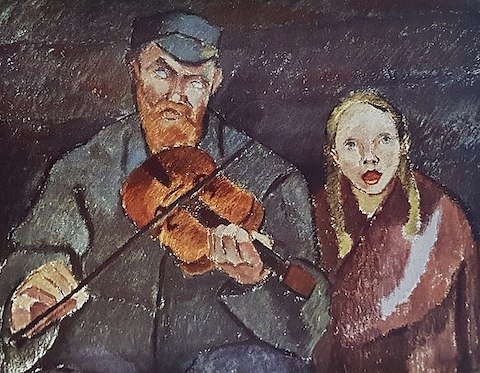
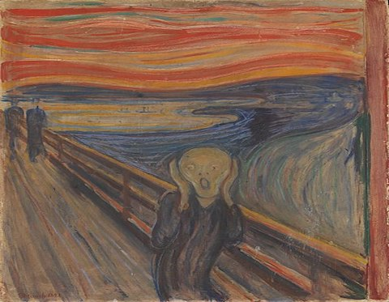
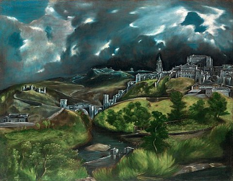
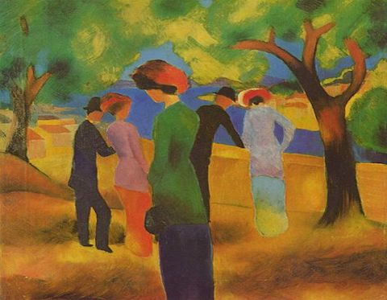
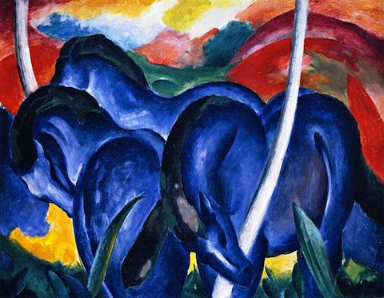

Welcome!
please keep scrolling to learn more about expressionism
.
.
.
1 / 7

A masterpiece of Expressionism, the portrait of Eduard Kosmack by Egon Schiele
captures the sitter's withdrawn character through bony hands and tightly pressed arms. The male
portrait in oil on canvas is located in the Belvedere Museum in Vienna, Austria.
2 / 7

Alvar Cawen was a founding member of the November Group, a group of Finnish
cubists and expressionists. One of his famous works was the painting titled "Blind." It is a
portrait of a blind man playing the violin beside a young girl. It is simple in its subject, but
radical in its expressionistic approach, particularly in the use of rough textures and colours.
3 / 7

The Scream is a composition created by Norwegian artist Edvard Munch in 1893. The
Norwegian name of the piece is Skrik, and the German title under which it was first exhibited is
Der Schrei der Natur.
4 / 7

View of Toledo, is one of the two surviving landscapes painted by El Greco, along
with View and Plan of Toledo. View of Toledo is held by the Metropolitan Museum of Art in New
York City.
5 / 7
,_oil_on_canvas,_52.1_x_54.6_cm,_Stiftung_Sammlung_E.G._Bührle,_Zurich.jpg)
Der Blaue Reiter is a designation by Wassily Kandinsky and Franz Marc for their
exhibition and publication activities, in which both artists acted as sole editors in the
almanac of the same name, first published in mid-May 1912.
6 / 7

Lady in Green Jacket is an oil-on-canvas painting by German artist August Macke,
executed in 1913. It is held in the Museum Ludwig in Cologne.
7 / 7

Blue Horses or Die grossen blauen Pferde (The Large Blue Horses) is a 1911
painting by German painter and printmaker Franz Marc (1880–1916).